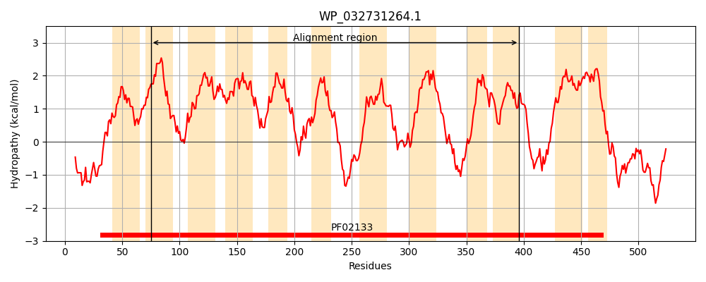
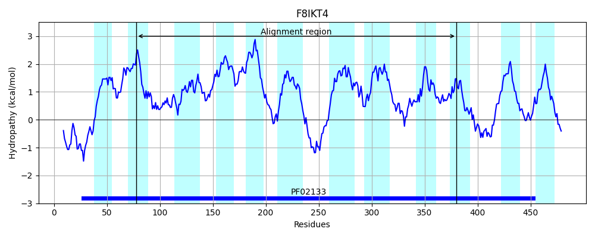
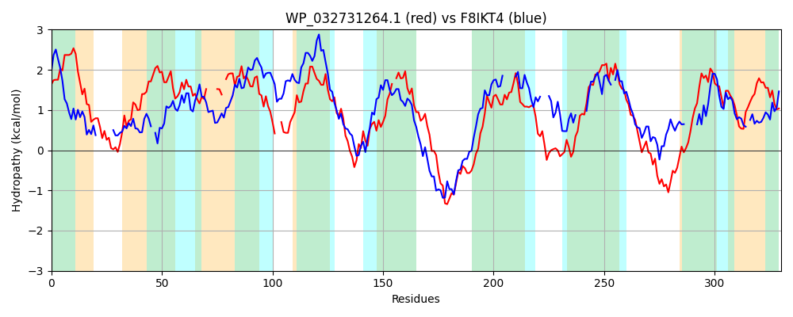

Hit Accession: F8IKT4
Hit TCID: 2.A.39.1.4
Hit Description: gnl|BL_ORD_ID|4432 gnl|TC-DB|F8IKT4|2.A.39.1.4 Permease for cytosine/purines uracil thiamine allantoin OS=Alicyclobacillus acidocaldarius (strain Tc-4-1) GN=TC41_2961 PE=4 SV=1
Mach Len: 330
e:0.000007
Query TMS Count : 12
Hit TMS Count: 12
TMS-Overlap Score: 9.600000
Predicted Substrates:CHEBI:22695;base
BLAST Alignment:
Score: 113 , Bit scores: 48 bits, E-value: 7.2e-06, Alignment length: 330, Percentage identity: 23
Query: 75 SILVAALVIFLTGIPLAITAARYNIDLDLITRSAGFGYFGSVITSIIFAGFTFIFFALEGSIMAQGLLVGL----GIP-LWMGYLIATLMVLPLVVYGMKAL--TRLQVWTTPLWLVLMVVPVVWLIVKDPQLVDGFLHFAGKNSASTVDITAIM-LGAGVCLSLIMQIGEQIDYLRFMPPKTAENRKSWWLAVFSAGPGWVVLGAIKQIIGAFLGFYLLTRFPAVHNTEPVQQFVSVFDNLVPGWLALTLAVVLVVISQIKINVTNAYSGSLAWTSAWTRTTKRYPGRIIFVVVNLAIALALMEGDMFSALSWILGFYSNFAIAWVVVV 396
SI AAL +++ P A T L A FG G I + F+ FT + + ++ ++ L G+P +G + L++ + Y + L L V L +VL V+ L P + F A +A V T ++ L G+ + DY R++P +T +R W + ++++G +G LG + + + PV +P W A+ +V VV+ I N NAYS +++ S R + + V ++ AI A+ +F + +++ F+ NF + V+
Sbjct: 78 SISFAALGLYVATGPRAGTVT-------LTISRAAFGVHGGKIPAF-FSWFTAVGWESVTMVLTVWAMLSLAQYVGLPSTGVGPTLVALVITLFLTYLVPILGHATLVVMQRVLAIVLAACTVLVLFAVLPDVKWNFNPPASALAAHGVFPTFLLALSVGLASTFYGWANFAADYSRYLPKETKTSRMVWATFLGGGLANFIMMG-----LGVVLGTVISAK---AFSANPVMAIAKA----IPEWAAIPFLIV-VVLGDICANYLNAYSSGMSFLSMGIRLKRHFA-----VALDGAICTAIGIYALFFSNNFV-DFFENFLDLMITVM 380 | Protein Hydropathy Plots: |
|---|
|  |  |
Pairwise Alignment-Hydropathy Plot:
|
|---|
|  |